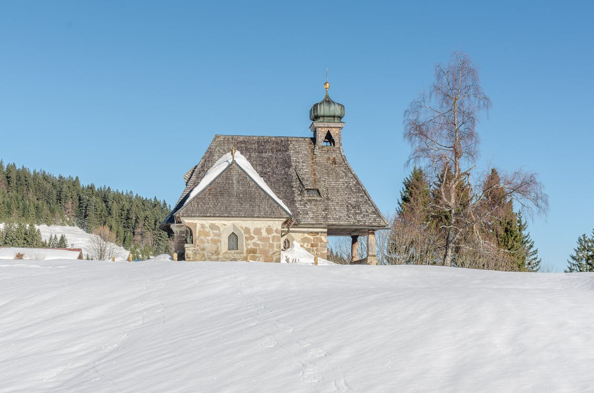

A estação chuvosa, também conhecida como estação chuvosa ou estação das monções, é a época do ano em que ocorre a maior parte da precipitação média anual de uma região. Geralmente dura um ou vários meses. O termo "estação verde" às vezes é usado como um eufemismo pelos empresários do turismo.As áreas com estações chuvosas estão espalhadas pelos trópicos e subtrópicos, principalmente no sudeste e oeste do Hemisfério Norte.
Os climas quentes, macrotérmicos ou megatérmicos apresentam temperaturas médias anuais elevadas, em torno de 23°C e acima de 18°C todos os meses, sem grandes variações sazonais, a temperatura é pouco variável durante o ano.12 Predominância de florestas tropicais, selvas e savanas, (prados de grama alta com algumas espécies de árvores e arbustos isolados ou que formam pequenos grupos). Estende-se pela imensa faixa intertropical que cobre, principalmente, as Américas Central e do Sul; e também na África e na Indonésia. Lá, embora as temperaturas médias anuais sejam altas, as chuvas são distribuídas de forma desigual de acordo com a latitude.

Um clima frio é aquele cuja temperatura média anual é inferior a 10°. Geralmente, esses tipos de temperaturas são encontrados em áreas glaciais e dentro do círculo polar. Entre as duas variedades, clima polar e clima frio, este último tem uma estação amena.
É o tipo de clima que ocorre entre os trópicos (Câncer e Capricórnio), até 14 graus de latitude norte e sul, e em que a temperatura média mensal não cai abaixo de 18°C durante todo o ano. Por definição, o clima tropical ainda é caracterizado por sua umidade, o que reforça a sensação de calor.